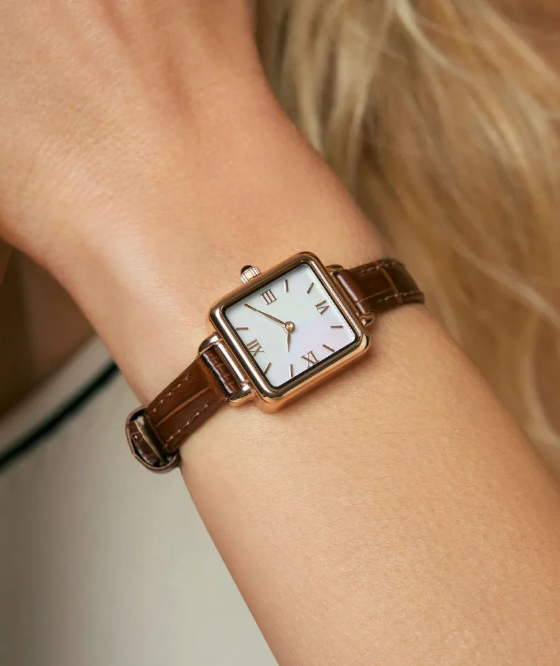
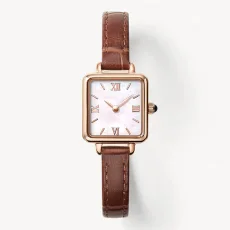
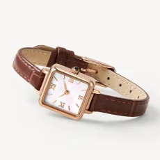

hartmann
hartmann
The brand draws inspiration from the atmosphere of English manor houses. Walking around these huge estates, one notices that the harmony of the architecture and the surrounding nature gives the impression that everything is in its proper place. As the seasons change, this sense of order and wholeness is not lost or diminished; on the contrary, it gains vitality. It is this sense of growth and renewal that we hope to reflect in our new collection.
| Model | Native |
| Diel size | 20 mm x 27 mm |
| Strap size | 22.5 cm x 1 cm |
| Crown | Black onyx |
| Diel material | Copper |
| Strap material | Genuine Leather |
| Water resistence | 30 m |

